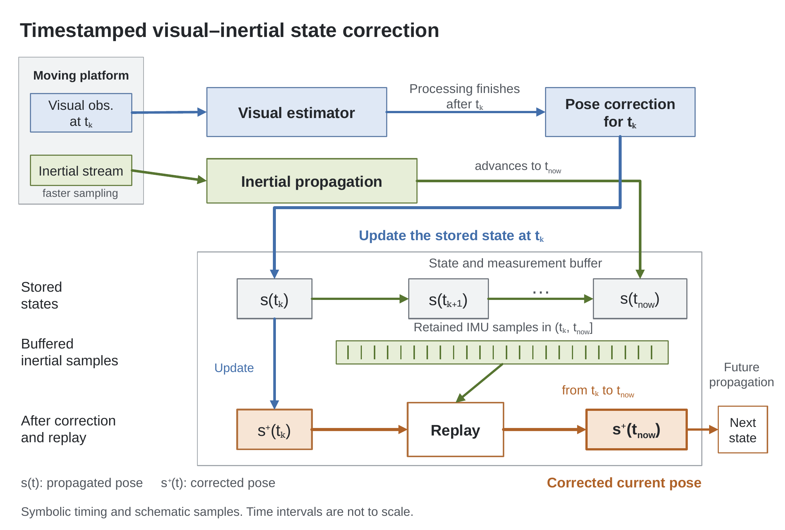
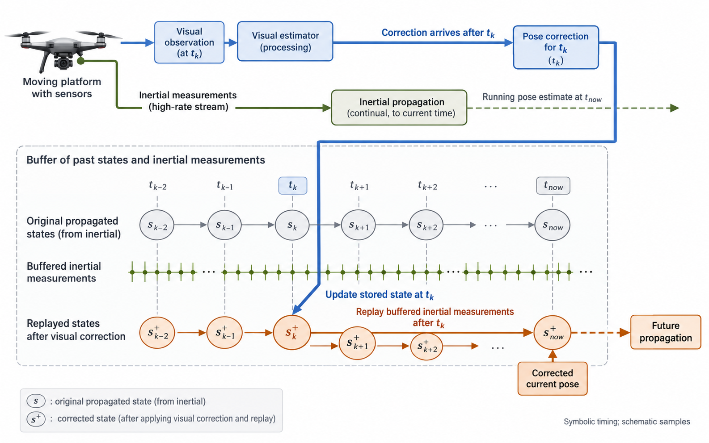
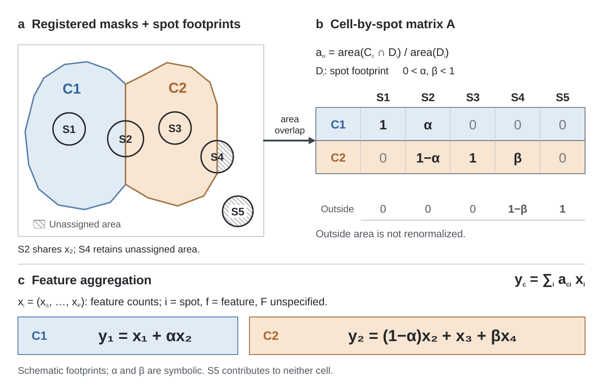
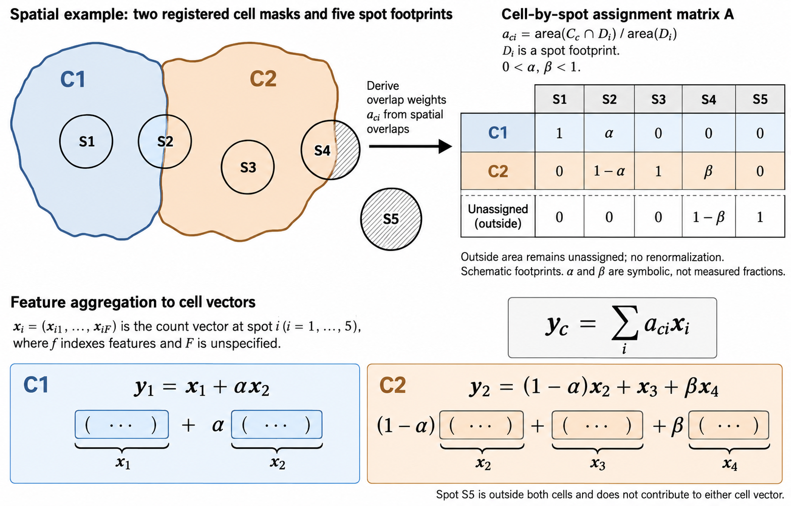
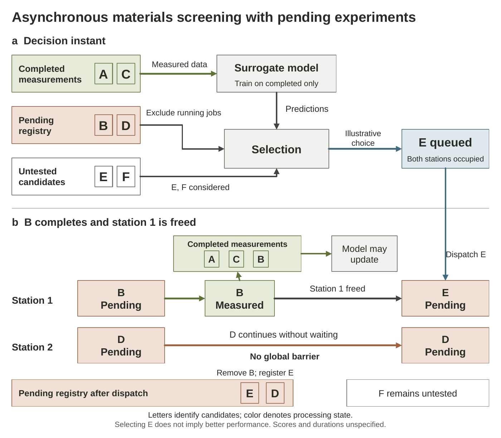
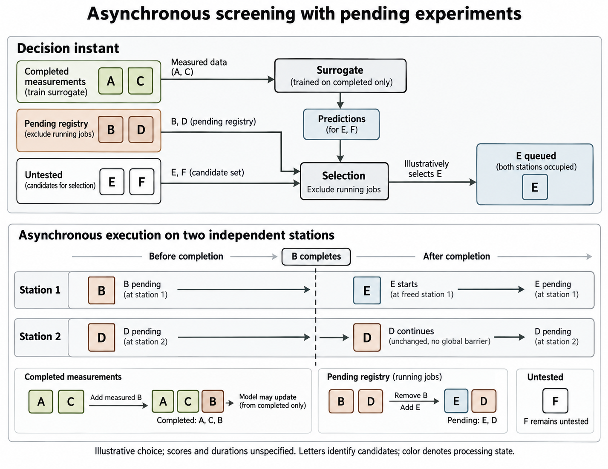

라벨 공개 평가의 피드백을 반영한 스킬로 새 과제 세 개를 생성했습니다. 각 생성자는 이전 대화와 결과를 받지 않고 자신의 과제와 갱신된 스킬로 작업했습니다.
이미지 초안 → 내용 명세 대조 → native PPTX 재구성 → 저장 파일 렌더링 검토
과거 시점의 관측으로 상태를 보정하고, 저장된 관성 측정을 재적용해 현재 자세를 갱신하는 방법입니다.


측정점이 세포 영역과 겹치는 비율을 집계 가중치로 연결하고, 세포 밖 비중은 미할당으로 남기는 방법입니다.


완료·실행 중·대기열·미실험 후보를 구분하며, 한 실험의 완료에 맞춰 다음 후보를 시작하는 방법입니다.

